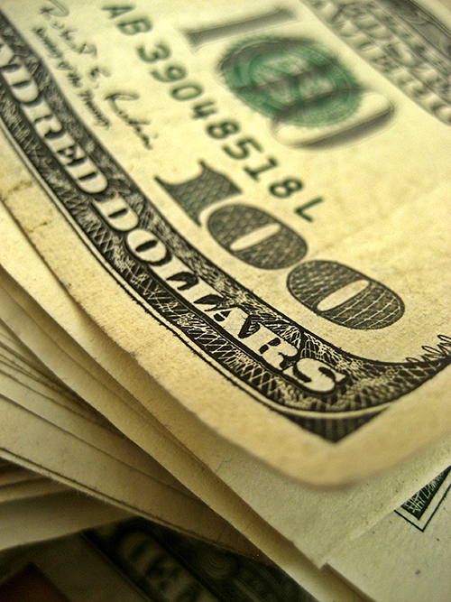

Money
Price: $100.00
The United States dollar (symbol: $; code: USD; also abbreviated US$ or U.S. Dollar, to distinguish it from other dollar-denominated currencies; referred to as the dollar, U.S. dollar, American dollar, or colloquially buck) is the official currency of the United States and its territories. The Coinage Act of 1792 introduced the U.S. dollar at par with the Spanish silver dollar, divided it into 100 cents, and authorized the minting of coins denominated in dollars and cents. U.S. banknotes are issued in the form of Federal Reserve Notes, popularly called greenbacks due to their historically predominantly green color. The monetary policy of the United States is conducted by the Federal Reserve System, which acts as the nation's central bank. The U.S. dollar was originally defined under a bimetallic standard of 371.25 grains (24.057 g) fine silver or, from 1837, 23.22 grains (1.505 g) fine gold, or $20.67 per troy ounce. The Gold Standard Act of 1900 linked the dollar solely to gold. From 1934 its equivalence to gold was revised to $35 per troy ounce. Since 1971 all links to gold have been repealed.[6] The U.S. dollar became an important international reserve currency after the First World War, and displaced the pound sterling as the world's primary reserve currency by the Bretton Woods Agreement towards the end of the Second World War. The dollar is the most widely used currency in international transactions.[7] It is also the official currency in several countries and the de facto currency in many others,[8][9] with Federal Reserve Notes (and, in a few cases, U.S. coins) used in circulation. As of February 10, 2021, currency in circulation amounted to US$2.10 trillion, $2.05 trillion of which is in Federal Reserve Notes (the remaining $50 billion is in the form of coins and older-style United States Notes).[10]
- Only the cent (¢) is used as everyday division of the dollar.
- The dime is used solely as the name of the coin with the value of 10 cents.
- The mill (₥) is relatively unknown, but before the mid-20th century was familiarly used in matters of sales taxes, as well as gasoline prices, which are usually in the form of $ΧΧ.ΧΧ9 per gallon (e.g., $3.599, commonly written as $3.59+9⁄10).[19][20]
- The eagle is also largely unknown to the general public.[20] This term was used in the Coinage Act of 1792 for the denomination of ten dollars, and subsequently was used in naming gold coins. The Spanish peso or dollar was historically divided into eight reales (colloquially, bits) - hence pieces of eight. Americans also learned counting in non-decimal bits of 121⁄2 cents before 1857 when Mexican bits were more frequently encountered than American cents; in fact this practice survived in New York Stock Exchange quotations until 2001.[21][22] In 1854, Secretary of the Treasury James Guthrie proposed creating $100, $50, and $25 gold coins, to be referred to as a union, half union, and quarter union, respectively,[23] thus implying a denomination of 1 Union = $100. However, no such coins were ever struck, and only patterns for the $50 half union exist. When currently issued in circulating form, denominations less than or equal to a dollar are emitted as U.S. coins, while denominations greater than or equal to a dollar are emitted as Federal Reserve Notes, disregarding these special cases:
- Gold coins issued for circulation until the 1930s, up to the value of $20 (known as the double eagle)
- Bullion or commemorative gold, silver, platinum, and palladium coins valued up to $100 as legal tender (though worth far more as bullion).
- Civil War paper currency issue in denominations below $1, i.e. fractional currency, sometimes pejoratively referred to as shinplasters.
This decriptive text was borrowed from